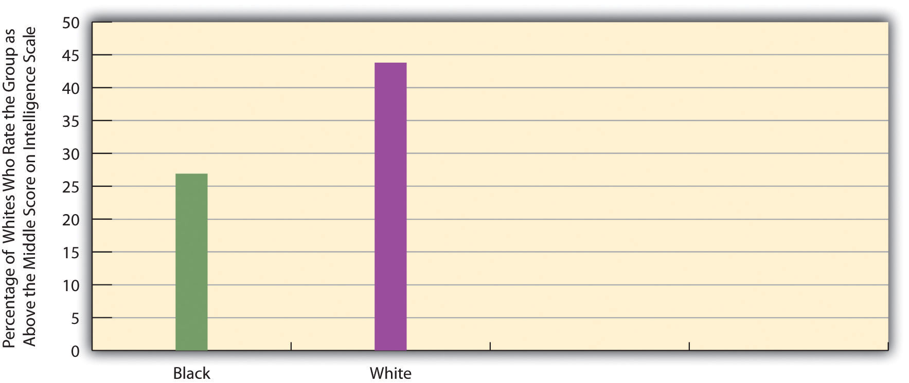
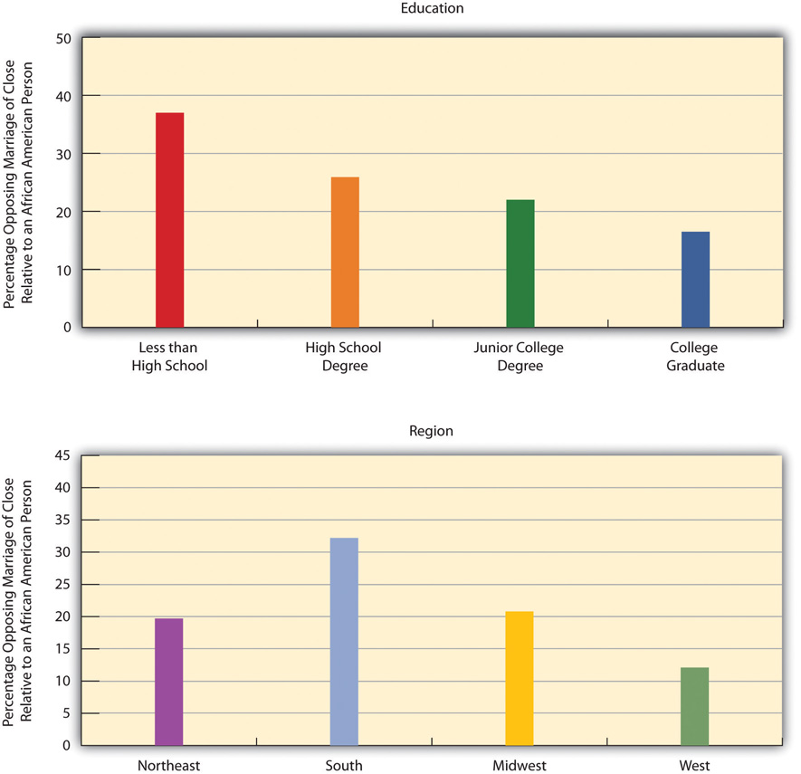
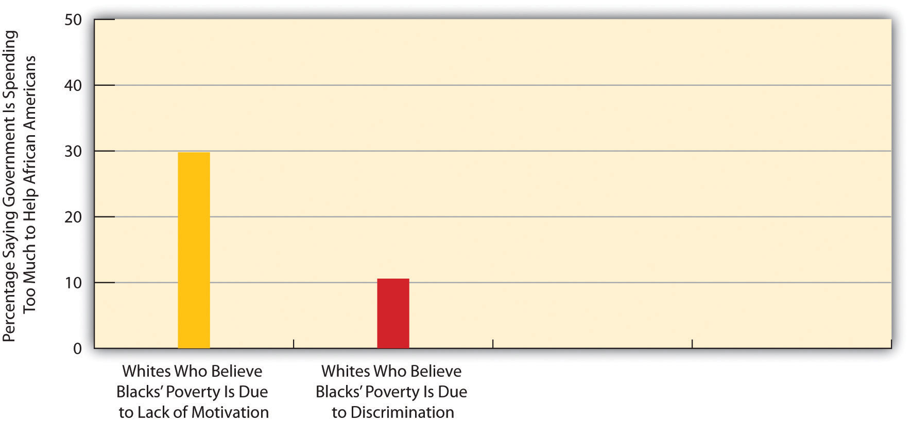

“Anger, Shock over Cross Burning in Calif. Community,” the headline said. This cross burning took place next to a black woman’s home in Arroyo Grande, California, a small, wealthy town about 170 miles northwest of Los Angeles. The eleven-foot cross had recently been stolen from a nearby church.
This hate crime shocked residents and led a group of local ministers to issue a public statement that said in part, “Burning crosses, swastikas on synagogue walls, hateful words on mosque doors are not pranks. They are hate crimes meant to frighten and intimidate.” The head of the group added, “We live in a beautiful area, but it’s only beautiful if every single person feels safe conducting their lives and living here.”
Four people were arrested four months later for allegedly burning the cross and charged with arson, hate crime, terrorism, and conspiracy. Arroyo Grande’s mayor applauded the arrests and said in a statement, “Despite the fact that our city was shaken by this crime, it did provide an opportunity for us to become better educated on matters relating to diversity.”
Sources: Jablon, 2011; Lerner, 2011; Mann, 2011Jablon, R. (2011, March 23). Anger, shock over cross burning in Calif. community. washingtonpost.com. Retrieved from http://www.washingtonpost.com/wp-dyn/content/article/2011/03/23/AR2011032300301.html; Lerner, D. (2011, July 22). Police chief says suspects wanted to “terrorize” cross burning victim. ksby.com. Retrieved from http://www.ksby.com/news/police-chief-says-suspects-wanted-to-terrorize-cross-burning-victim/; Mann, C. (2011, March 22). Cross burning in Calif. suburb brings FBI into hate crime investigation. cbsnews.com. Retrieved from http://www.cbsnews.com/.
Cross burnings like this one recall the Ku Klux Klan era between the 1880s and 1960s, when white men dressed in white sheets and white hoods terrorized African Americans in the South and elsewhere and lynched more than 3,000 black men and women. Thankfully, that era is long gone, but as this news story reminds us, racial issues continue to trouble the United States.
In the wake of the 1960s urban riots, the so-called Kerner Commission (1968, p. 1)Kerner Commission. (1968). Report of the National Advisory Commission on civil disorders. New York, NY: Bantam Books. appointed by President Lyndon Johnson to study the riots famously warned, “Our nation is moving toward two societies, one black, one white—separate and unequal.” The commission blamed white racism for the riots and urged the government to provide jobs and housing for African Americans and to take steps to end racial segregation.
More than four decades later, racial inequality in the United States continues to exist and in many ways has worsened. Despite major advances by African Americans, Latinos, and other people of color during the past few decades, they continue to lag behind non-Hispanic whites in education, income, health, and other social indicators. The faltering economy since 2008 has hit people of color especially hard, and the racial wealth gap is deeper now than it was just two decades ago.
Why does racial and ethnic inequality exist? What forms does it take? What can be done about it? This chapter addresses all these questions. We shall see that, although racial and ethnic inequality has stained the United States since its beginnings, there is hope for the future as long as our nation understands the structural sources of this inequality and makes a concerted effort to reduce it. Later chapters in this book will continue to highlight various dimensions of racial and ethnic inequality. Immigration, a very relevant issue today for Latinos and Asians and the source of much political controversy, receives special attention in Chapter 15 "Population and the Environment"’s discussion of population problems.
Race and ethnicity have torn at the fabric of American society ever since the time of Christopher Columbus, when an estimated 1 million Native Americans populated the eventual United States. By 1900, their numbers had dwindled to about 240,000, as tens of thousands were killed by white settlers and US troops and countless others died from disease contracted from people with European backgrounds. Scholars say this mass killing of Native Americans amounted to genocide (D. A. Brown, 2009).Brown, D. A. (2009). Bury my heart at Wounded Knee: An Indian history of the American West. New York, NY: Sterling Innovation.
African Americans also have a history of maltreatment that began during the colonial period, when Africans were forcibly transported from their homelands to be sold as slaves in the Americas. Slavery, of course, continued in the United States until the North’s victory in the Civil War ended it. African Americans outside the South were not slaves but were still victims of racial prejudice. During the 1830s, white mobs attacked free African Americans in cities throughout the nation, including Philadelphia, Cincinnati, Buffalo, and Pittsburgh. The mob violence stemmed from a “deep-seated racial prejudice…in which whites saw blacks as ‘something less than human’” (R. M. Brown, 1975, p. 206)Brown, R. M. (1975). Strain of violence: Historical studies of American violence and vigilantism. New York, NY: Oxford University Press. and continued well into the twentieth century, when white mobs attacked African Americans in several cities, with at least seven antiblack riots occurring in 1919 that left dozens dead. Meanwhile, an era of Jim Crow racism in the South led to the lynching of thousands of African Americans, segregation in all facets of life, and other kinds of abuses (Litwack, 2009).Litwack, L. F. (2009). How free is free? The long death of Jim Crow. Cambridge, MA: Harvard University Press.

During the era of Jim Crow racism in the South, several thousand African Americans were lynched.
Image courtesy of US Library of Congress, http://loc.gov/pictures/resource/npcc.12928.
African Americans were not the only targets of native-born white mobs back then (Dinnerstein & Reimers, 2009).Dinnerstein, L., & Reimers, D. M. (2009). Ethnic Americans: A history of immigration. New York, NY: Columbia University Press. As immigrants from Ireland, Italy, Eastern Europe, Mexico, and Asia flooded into the United States during the nineteenth and early twentieth centuries, they, too, were beaten, denied jobs, and otherwise mistreated. During the 1850s, mobs beat and sometimes killed Catholics in cities such as Baltimore and New Orleans. During the 1870s, whites rioted against Chinese immigrants in cities in California and other states. Hundreds of Mexicans were attacked and/or lynched in California and Texas during this period.
Nazi racism in the 1930s and 1940s helped awaken Americans to the evils of prejudice in their own country. Against this backdrop, a monumental two-volume work by Swedish social scientist Gunnar Myrdal (1944)Myrdal, G. (1944). An American dilemma: The negro problem and modern democracy. New York, NY: Harper and Brothers. attracted much attention when it was published. The book, An American Dilemma: The Negro Problem and Modern Democracy, documented the various forms of discrimination facing blacks back then. The “dilemma” referred to by the book’s title was the conflict between the American democratic ideals of egalitarianism and liberty and justice for all and the harsh reality of prejudice, discrimination, and lack of equal opportunity.
The Kerner Commission’s 1968 report reminded the nation that little, if anything, had been done since Myrdal’s book to address this conflict. Sociologists and other social scientists have warned since then that the status of people of color has actually been worsening in many ways since this report was issued (Massey, 2007; Wilson, 2009).Massey, D. S. (2007). Categorically unequal: The American stratification system. New York, NY: Russell Sage Foundation; Wilson, W. J. (2009). The economic plight of inner-city black males. In E. Anderson (Ed.), Against the wall: Poor, young, black, and male (pp. 55–70). Philadelphia, PA: University of Pennsylvania Press. Evidence of this status appears in the remainder of this chapter.
To begin our understanding of racial and ethnic inequality, we first need to understand what race and ethnicity mean. These terms may seem easy to define but are much more complex than their definitions suggest.
Let’s start first with raceA category of people who share certain inherited physical characteristics, such as skin color, facial features, and stature., which refers to a category of people who share certain inherited physical characteristics, such as skin color, facial features, and stature. A key question about race is whether it is more of a biological category or a social category. Most people think of race in biological terms, and for more than three hundred years, or ever since white Europeans began colonizing nations filled with people of color, people have been identified as belonging to one race or another based on certain biological features.
It is certainly easy to see that people in the United States and around the world differ physically in some obvious ways. The most noticeable difference is skin tone: Some groups of people have very dark skin, while others have very light skin. Other differences also exist. Some people have very curly hair, while others have very straight hair. Some have thin lips, while others have thick lips. Some groups of people tend to be relatively tall, while others tend to be relatively short. Using such physical differences as their criteria, scientists at one point identified as many as nine races: African, American Indian or Native American, Asian, Australian Aborigine, European (more commonly called “white”), Indian, Melanesian, Micronesian, and Polynesian (Smedley, 2007).Smedley, A. (2007). Race in North America: Evolution of a worldview. Boulder, CO: Westview Press.
Although people certainly do differ in these kinds of physical features, anthropologists, sociologists, and many biologists question the value of these categories and thus the value of the biological concept of race (Smedley, 2007).Smedley, A. (2007). Race in North America: Evolution of a worldview. Boulder, CO: Westview Press. For one thing, we often see more physical differences within a race than between races. For example, some people we call “white” (or European), such as those with Scandinavian backgrounds, have very light skins, while others, such as those from some Eastern European backgrounds, have much darker skins. In fact, some “whites” have darker skin than some “blacks,” or African Americans. Some whites have very straight hair, while others have very curly hair; some have blonde hair and blue eyes, while others have dark hair and brown eyes. Because of interracial reproduction going back to the days of slavery, African Americans also differ in the darkness of their skin and in other physical characteristics. In fact, it is estimated that at least 30 percent of African Americans have some white (i.e., European) ancestry and that at least 20 percent of whites have African or Native American ancestry. If clear racial differences ever existed hundreds or thousands of years ago (and many scientists doubt such differences ever existed), in today’s world these differences have become increasingly blurred.
President Barack Obama had an African father and a white mother. Although his ancestry is equally black and white, Obama considers himself an African American, as do most Americans. In several Latin American nations, however, Obama would be considered white because of his white ancestry.
Image courtesy of Steve Jurvetson, http://www.flickr.com/photos/jurvetson/2175936409.
Another reason to question the biological concept of race is that an individual or a group of individuals is often assigned to a race arbitrarily. A century ago, for example, Irish, Italians, and Eastern European Jews who left their homelands were not regarded as white once they reached the United States but rather as a different, inferior (if unnamed) race (Painter, 2010).Painter, N. I. (2010). The history of white people. New York, NY: W. W. Norton. The belief in their inferiority helped justify the harsh treatment they suffered in their new country. Today, of course, we call people from all three backgrounds white or European.
In this context, consider someone in the United States who has a white parent and a black parent. What race is this person? American society usually calls this person black or African American, and the person may adopt this identity (as does President Barack Obama, who had a white mother and African father). But where is the logic for doing so? This person, as well as President Obama, is as much white as black in terms of parental ancestry.
Or consider someone with one white parent and another parent who is the child of one black parent and one white parent. This person thus has three white grandparents and one black grandparent. Even though this person’s ancestry is thus 75 percent white and 25 percent black, she or he is likely to be considered black in the United States and may well adopt this racial identity. This practice reflects the traditional one-drop rule in the United States that defines someone as black if she or he has at least one drop of black blood, and that was used in the antebellum South to keep the slave population as large as possible (Staples, 2005)Staples, B. (2005, October 31). Why race isn’t as “black” and “white” as we think. New York Times, p. A18.. Yet in many Latin American nations, this person would be considered white (see Note 3.7 "Lessons from Other Societies"). With such arbitrary designations, race is more of a social category than a biological one.
The Concept of Race in Brazil
As the text discusses, race was long considered a fixed, biological category, but today it is now regarded as a social construction. The experience of Brazil provides very interesting comparative evidence for this more accurate way of thinking about race.
When slaves were first brought to the Americas almost four hundred years ago, many more were taken to Brazil, where slavery was not abolished until 1888, than to the land that eventually became the United States. Brazil was then a colony of Portugal, and the Portuguese used Africans as slave labor. Just as in the United States, a good deal of interracial reproduction has occurred since those early days, much of it initially the result of rape of women slaves by their owners, and Brazil over the centuries has had many more racial intermarriages than the United States. Also like the United States, then, much of Brazil’s population has multiracial ancestry. But in a significant departure from the United States, Brazil uses different criteria to consider the race to which a person belongs.
Brazil uses the term preto, or black, for people whose ancestry is solely African. It also uses the term branco, or white, to refer to people whose ancestry is both African and European. In contrast, as the text discusses, the United States commonly uses the term black or African American to refer to someone with even a small amount of African ancestry and white for someone who is thought to have solely European ancestry or at least “looks” white. If the United States were to follow Brazil’s practice of reserving the term black for someone whose ancestry is solely African and the term white for someone whose ancestry is both African and European, many of the Americans commonly called “black” would no longer be considered black and instead would be considered white.
As sociologist Edward E. Telles (2006, p. 79)Telles, E. E. (2006). Race in another America: The significance of skin color in Brazil. Princeton, NJ: Princeton University Press. summarizes these differences, “[Blackness is differently understood in Brazil than in the United States. A person considered black in the United States is often not so in Brazil. Indeed, some U.S. blacks may be considered white in Brazil. Although the value given to blackness is similarly low [in both nations], who gets classified as black is not uniform.” The fact that someone can count on being considered “black” in one society and not “black” in another society underscores the idea that race is best considered a social construction rather than a biological category.
Sources: Barrionuevo & Calmes, 2011; Klein & Luno, 2009; Telles, 2006Barrionuevo, A., & Calmes, J. (2011, March 21). President underscores similarities with Brazilians, but sidesteps one. New York Times, p. A8; Klein, H. S., & Luno, F. V. (2009). Slavery in Brazil. New York, NY: Cambridge University Press; Telles, E. E. (2006). Race in another America: The significance of skin color in Brazil. Princeton, NJ: Princeton University Press.
A third reason to question the biological concept of race comes from the field of biology itself and more specifically from the studies of genetics and human evolution. Starting with genetics, people from different races are more than 99.9 percent the same in their DNA (Begley, 2008).Begley, S. (2008, February 29). Race and DNA. Newsweek. Retrieved from http://www.thedailybeast.com/newsweek/blogs/lab-notes/2008/02/29/race-and-dna.html. To turn that around, less than 0.1 percent of all DNA in our bodies accounts for the physical differences among people that we associate with racial differences. In terms of DNA, then, people with different racial backgrounds are much, much more similar than dissimilar.
Even if we acknowledge that people differ in the physical characteristics we associate with race, modern evolutionary evidence reminds us that we are all, really, of one human race. According to evolutionary theory, the human race began thousands and thousands of years ago in sub-Saharan Africa. As people migrated around the world over the millennia, natural selection took over. It favored dark skin for people living in hot, sunny climates (i.e., near the equator), because the heavy amounts of melanin that produce dark skin protect against severe sunburn, cancer, and other problems. By the same token, natural selection favored light skin for people who migrated farther from the equator to cooler, less sunny climates, because dark skins there would have interfered with the production of vitamin D (Stone & Lurquin, 2007).Stone, L., & Lurquin, P. F. (2007). Genes, culture, and human evolution: A synthesis. Malden, MA: Blackwell. Evolutionary evidence thus reinforces the common humanity of people who differ in the rather superficial ways associated with their appearances: We are one human species composed of people who happen to look different.
The reasons for doubting the biological basis for racial categories suggest that race is more of a social category than a biological one. Another way to say this is that race is a social constructionA concept that has no objective reality but rather is what people decide it is., a concept that has no objective reality but rather is what people decide it is (Berger & Luckmann, 1963).Berger, P., & Luckmann, T. (1963). The social construction of reality. New York, NY: Doubleday. In this view, race has no real existence other than what and how people think of it.
This understanding of race is reflected in the problems, outlined earlier, in placing people with multiracial backgrounds into any one racial category. We have already mentioned the example of President Obama. As another example, golfer Tiger Woods was typically called an African American by the news media when he burst onto the golfing scene in the late 1990s, but in fact his ancestry is one-half Asian (divided evenly between Chinese and Thai), one-quarter white, one-eighth Native American, and only one-eighth African American (Leland & Beals, 1997).Leland, J., & Beals, G. (1997, May 5). In living colors: Tiger Woods is the exception that rules. Newsweek, 58–60.
Historical examples of attempts to place people in racial categories further underscore the social constructionism of race. In the South during the time of slavery, the skin tone of slaves lightened over the years as babies were born from the union, often in the form of rape, of slave owners and other whites with slaves. As it became difficult to tell who was “black” and who was not, many court battles over people’s racial identity occurred. People who were accused of having black ancestry would go to court to prove they were white in order to avoid enslavement or other problems (Staples, 1998).Staples, B. (1998, November 13). The shifting meanings of “black” and “white.” New York Times, p. WK14.
Although race is a social construction, it is also true that race has real consequences because people do perceive race as something real. Even though so little of DNA accounts for the physical differences we associate with racial differences, that low amount leads us not only to classify people into different races but also to treat them differently—and, more to the point, unequally—based on their classification. Yet modern evidence shows there is little, if any, scientific basis for the racial classification that is the source of so much inequality.
Because of the problems in the meaning of race, many social scientists prefer the term ethnicity in speaking of people of color and others with distinctive cultural heritages. In this context, ethnicityThe shared social, cultural, and historical experiences, stemming from common national or regional backgrounds, that make subgroups of a population different from one another. refers to the shared social, cultural, and historical experiences, stemming from common national or regional backgrounds, that make subgroups of a population different from one another. Similarly, an ethnic groupA subgroup of a population with a set of shared social, cultural, and historical experiences; with relatively distinctive beliefs, values, and behaviors; and with some sense of identity of belonging to the subgroup. is a subgroup of a population with a set of shared social, cultural, and historical experiences; with relatively distinctive beliefs, values, and behaviors; and with some sense of identity of belonging to the subgroup. So conceived, the terms ethnicity and ethnic group avoid the biological connotations of the terms race and racial group.
At the same time, the importance we attach to ethnicity illustrates that it, too, is in many ways a social construction, and our ethnic membership thus has important consequences for how we are treated. In particular, history and current practice indicate that it is easy to become prejudiced against people with different ethnicities from our own. Much of the rest of this chapter looks at the prejudice and discrimination operating today in the United States against people whose ethnicity is not white and European. Around the world today, ethnic conflict continues to rear its ugly head. The 1990s and 2000s were filled with ethnic cleansing and pitched battles among ethnic groups in Eastern Europe, Africa, and elsewhere. Our ethnic heritages shape us in many ways and fill many of us with pride, but they also are the source of much conflict, prejudice, and even hatred, as the hate crime story that began this chapter so sadly reminds us.
Prejudice and discrimination (discussed in the next section) are often confused, but the basic difference between them is this: Prejudice is the attitude, while discrimination is the behavior. More specifically, racial and ethnic prejudiceA set of negative attitudes, beliefs, and judgments about whole categories of people, and about individual members of those categories, because of their perceived race and/or ethnicity. refers to a set of negative attitudes, beliefs, and judgments about whole categories of people, and about individual members of those categories, because of their perceived race and/or ethnicity. A closely related concept is racismThe belief that certain racial or ethnic groups are inferior to one’s own., or the belief that certain racial or ethnic groups are inferior to one’s own. Prejudice and racism are often based on racial and ethnic stereotypesSimplified, mistaken generalizations about people because of their race and/or ethnicity., or simplified, mistaken generalizations about people because of their race and/or ethnicity. While cultural and other differences do exist among the various American racial and ethnic groups, many of the views we have of such groups are unfounded and hence are stereotypes. An example of the stereotypes that white people have of other groups appears in Figure 3.1 "Perceptions by Non-Latino White Respondents of the Intelligence of White and Black Americans", in which white respondents in the General Social Survey (GSS), a recurring survey of a random sample of the US population, are less likely to think blacks are intelligent than they are to think whites are intelligent.
Figure 3.1 Perceptions by Non-Latino White Respondents of the Intelligence of White and Black Americans
Source: Data from General Social Survey. (2010). Retrieved from http://sda.berkeley.edu/cgi-bin/hsda?harcsda+gss10.
Where does racial and ethnic prejudice come from? Why are some people more prejudiced than others? Scholars have tried to answer these questions at least since the 1940s, when the horrors of Nazism were still fresh in people’s minds. Theories of prejudice fall into two camps, social-psychological and sociological. We will look at social-psychological explanations first and then turn to sociological explanations. We will also discuss distorted mass media treatment of various racial and ethnic groups.
One of the first social-psychological explanations of prejudice centered on the authoritarian personalityA personality emphasizing such things as obedience to authority, a rigid adherence to rules, and low acceptance of people not like oneself and said to help account for racial and ethnic prejudice. (Adorno, Frenkel-Brunswick, Levinson, & Sanford, 1950).Adorno, T. W., Frenkel-Brunswick, E., Levinson, D. J., & Sanford, R. N. (1950). The authoritarian personality. New York, NY: Harper. According to this view, authoritarian personalities develop in childhood in response to parents who practice harsh discipline. Individuals with authoritarian personalities emphasize such things as obedience to authority, a rigid adherence to rules, and low acceptance of people (out-groups) not like oneself. Many studies find strong racial and ethnic prejudice among such individuals (Sibley & Duckitt, 2008).Sibley, C. G., & Duckitt, J. (2008). Personality and prejudice: A meta-analysis and theoretical review. Personality and Social Psychology Review, 12, 248–279. But whether their prejudice stems from their authoritarian personalities or instead from the fact that their parents were probably prejudiced themselves remains an important question.
Another early and still popular social-psychological explanation is called frustration theory (or scapegoat theory)As an explanation of racial and ethnic prejudice, the view that individuals blame the problems they experience on racial and ethnic minorities and thus scapegoat them instead of recognizing the real sources of their own misfortunes. (Dollard, Doob, Miller, Mowrer, & Sears, 1939).Dollard, J., Doob, L. W., Miller, N. E., Mowrer, O. H., & Sears, R. R. (1939). Frustration and Aggression. New Haven, CT: Yale University Press. In this view individuals with various problems become frustrated and tend to blame their troubles on groups that are often disliked in the real world (e.g., racial, ethnic, and religious minorities). These minorities are thus scapegoats for the real sources of people’s misfortunes. Several psychology experiments find that when people are frustrated, they indeed become more prejudiced. In one early experiment, college students who were purposely not given enough time to solve a puzzle were more prejudiced after the experiment than before it (Cowen, Landes, & Schaet, 1959).Cowen, E. L., Landes, J., & Schaet, D. E. (1959). The effects of mild frustration on the expression of prejudiced attitudes. Journal of Abnormal and Social Psychology, 64, 33–38.
One popular sociological explanation emphasizes conformity and socialization and is called social learning theory. In this view, people who are prejudiced are merely conforming to the culture in which they grow up, and prejudice is the result of socialization from parents, peers, the news media, and other various aspects of their culture. Supporting this view, studies have found that people tend to become more prejudiced when they move to areas where people are very prejudiced and less prejudiced when they move to locations where people are less prejudiced (Aronson, 2008).Aronson, E. (2008). The social animal (10th ed.). New York, NY: Worth. If people in the South today continue to be more prejudiced than those outside the South, as we discuss later, even though legal segregation ended more than four decades ago, the influence of their culture on their socialization may help explain these beliefs.
Growing Up as Farmworkers’ Kids
In the large agricultural fields of California work thousands of farmworkers and their families. Adults and children alike live in poor, crowded conditions and do backbreaking work in the hot sun, day after day after day.
Because their parents are migrant workers, many children attend a specific school for only a few weeks or months at most before their parents move to another field in another town or even another state. At Sherwood Elementary School in Salinas, California, in the heart of the state’s agricultural sector, 97 percent of students live in or near poverty. With their Latino backgrounds, more than three-fourths do not speak English well or at all, and many of their parents cannot read or write their own language, Spanish.
At the Sherwood school, according to a news report, many students “sleep beneath carports and live in such cramped quarters that their parents take them to the local truck stop to wash up before school.” A local high school teacher said many of his students see little of their parents, who spend most of their waking hours working in the fields. “They have little brothers and sisters to take care of, maybe cook for. Yet they’re supposed to turn in a 10-page paper by tomorrow? I mean, it’s unreal.”
These conditions have grievous consequences for California’s migrant farmworker children, almost half of whom fail to complete high school. The principal of the Sherwood Elementary School said the key strategy for her faculty and school was “understanding where the students come from but also having high expectations.”
The plight of farmworkers’ children is just one aspect of the difficulties facing Latino children around the country. Thanks to reproduction and immigration, the number of Latino children nationwide has grown significantly during the past few decades: in 2009, 23 percent of US kindergarten children were Latino, compared to only 10 percent in 1989. These growing numbers underscore the need to pay attention to the health and welfare of Latino children.
Against this backdrop, it is distressing to note that their health and welfare is not very good at all. About one-third of Latino children live in poverty. The average Latino child grows up in a poor neighborhood where almost half of the residents do not speak English fluently, where the schools are substandard, and where the high school dropout and teen unemployment rates are high. A number of factors, including their ethnicity, poverty, language barriers, and the immigrant status of many of their parents, limit Latino children’s access to adequate health care and various kinds of social services.
Amid all these problems, however, the situation of California’s farmworker children stands out as a national embarrassment for a prosperous country like the United States. As the country struggles to end racial and ethnic inequality, it must not forget the children of Salinas who have to use a truck stop to wash up before school.
Sources: P. L. Brown, 2011; Landale, McHale, & Booth, 2011; Tavernise, 2011Brown, P. L. (2011, March 13). Itinerant life weighs on farmworkers’ children. New York Times, p. A18; Landale, N. S., McHale, S., & Booth, A. (Eds.). (2011). Growing up Hispanic: Health and development of children of immigrants. Washington, DC: Urban Institute Press; Tavernise, S. (2011, February 8). Among nation’s youngest, analysis finds fewer whites. New York Times, p. A14.
The mass media play a key role in how many people learn to be prejudiced. This type of learning happens because the media often present people of color in a negative light. By doing so, the media unwittingly reinforce the prejudice that individuals already have or even increase their prejudice (Larson, 2005).Larson, S. G. (2005). Media & minorities: The politics of race in news and entertainment. Lanham, MD: Rowman & Littlefield. Examples of distorted media coverage abound. Even though poor people are more likely to be white than any other race or ethnicity (see Chapter 2 "Poverty"), the news media use pictures of African Americans far more often than those of whites in stories about poverty. In one study, national news magazines, such as Time and Newsweek, and television news shows portrayed African Americans in almost two-thirds of their stories on poverty, even though only about one-fourth of poor people are African Americans. In the magazine stories, only 12 percent of the African Americans had a job, even though in the real world more than 40 percent of poor African Americans were working at the time the stories were written (Gilens, 1996).Gilens, M. (1996). Race and poverty in America: Public misperceptions and the American news media. Public Opinion Quarterly, 60, 515–541. In a Chicago study, television news shows there depicted whites fourteen times more often in stories of good Samaritans, even though whites and African Americans live in Chicago in roughly equal numbers (Entman & Rojecki, 2001).Entman, R. M., & Rojecki, A. (2001). The black image in the white mind. Chicago, IL: University of Chicago Press. Many other studies find that newspaper and television stories about crime and drugs feature higher proportions of African Americans as offenders than is true in arrest statistics (Surette, 2011).Surette, R. (2011). Media, crime, and criminal justice: Images, realities, and policies (4th ed.). Belmont, CA: Wadsworth. Studies like these show that the news media “convey the message that black people are violent, lazy, and less civic minded” (Jackson, 1997, p. A27).Jackson, D. Z. (1997, December 5). Unspoken during race talk. The Boston Globe, p. A27.
A second sociological explanation emphasizes economic and political competition and is commonly called group threat theory (Quillian, 2006).Quillian, L. (2006). New approaches to understanding racial prejudice and discrimination. Annual Review of Sociology, 32, 299–328. In this view, prejudice arises from competition over jobs and other resources and from disagreement over various political issues. When groups vie with each other over these matters, they often become hostile toward each other. Amid such hostility, it is easy to become prejudiced toward the group that threatens your economic or political standing. A popular version of this basic explanation is Susan Olzak’s (1992)Olzak, S. (1992). The dynamics of ethnic competition and conflict. Stanford, CA: Stanford University Press. ethnic competition theory, which holds that ethnic prejudice and conflict increase when two or more ethnic groups find themselves competing for jobs, housing, and other goals.
The competition explanation is the macro equivalent of the frustration/scapegoat theory already discussed. Much of the white mob violence discussed earlier stemmed from whites’ concern that the groups they attacked threatened their jobs and other aspects of their lives. Thus lynchings of African Americans in the South increased when the Southern economy worsened and decreased when the economy improved (Tolnay & Beck, 1995).Tolnay, S. E., & Beck, E. M. (1995). A festival of violence: An analysis of southern lynchings, 1882–1930. Urbana, IL: University of Illinois Press. Similarly, white mob violence against Chinese immigrants in the 1870s began after the railroad construction that employed so many Chinese immigrants slowed and the Chinese began looking for work in other industries. Whites feared that the Chinese would take jobs away from white workers and that their large supply of labor would drive down wages. Their assaults on the Chinese killed several people and prompted the passage by Congress of the Chinese Exclusion Act in 1882 that prohibited Chinese immigration (Dinnerstein & Reimers, 2009).Dinnerstein, L., & Reimers, D. M. (2009). Ethnic Americans: A history of immigration. New York, NY: Columbia University Press.
During the 1870s, whites feared that Chinese immigrants would take away their jobs. This fear led to white mob violence against the Chinese and to an act of Congress that prohibited Chinese immigration.
Image courtesy of Marku1988, http://commons.wikimedia.org/wiki/File:Chinese_Emigration_to_America.jpg.
Since the 1940s, social scientists have investigated the individual correlates of racial and ethnic prejudice (Stangor, 2009).Stangor, C. (2009). The study of stereotyping, prejudice, and discrimination within social psychology: A quick history of theory and research. In T. D. Nelson (Ed.), Handbook of prejudice, stereotyping, and discrimination (pp. 1–22). New York, NY: Psychology Press. These correlates help test the theories of prejudice just presented. For example, if authoritarian personalities do produce prejudice, then people with these personalities should be more prejudiced. If frustration also produces prejudice, then people who are frustrated with aspects of their lives should also be more prejudiced. Other correlates that have been studied include age, education, gender, region of country, race, residence in integrated neighborhoods, and religiosity. We can take time here to focus on gender, education, and region of country and discuss the evidence for the racial attitudes of whites, as most studies do in view of the historic dominance of whites in the United States.
The findings on gender are rather surprising. Although women are usually thought to be more empathetic than men and thus to be less likely to be racially prejudiced, recent research indicates that the racial views of (white) women and men are in fact very similar and that the two genders are about equally prejudiced (Hughes & Tuch, 2003).Hughes, M., & Tuch, S. A. (2003). Gender differences in whites’ racial attitudes: Are women’s attitudes really more favorable? Social Psychology Quarterly, 66, 384–401. This similarity supports group threat theory, outlined earlier, in that it indicates that white women and men are responding more as whites than as women or men, respectively, in formulating their racial views.
Findings on education and region of country are not surprising. Focusing again just on whites, less educated people are usually more racially prejudiced than better-educated people, and Southerners are usually more prejudiced than non-Southerners (Krysan, 2000).Krysan, M. (2000). Prejudice, politics, and public opinion: Understanding the sources of racial policy attitudes. Annual Review of Sociology, 26, 135–168. Evidence of these differences appears in Figure 3.2 "Education, Region, and Opposition by Non-Latino Whites to a Close Relative Marrying an African American", which depicts educational and regional differences in a type of racial prejudice that social scientists call social distance, or feelings about interacting with members of other races and ethnicities. The General Social Survey asks respondents how they feel about a “close relative” marrying an African American. Figure 3.2 "Education, Region, and Opposition by Non-Latino Whites to a Close Relative Marrying an African American" shows how responses by white (non-Latino) respondents to this question vary by education and by Southern residence. Whites without a high school degree are much more likely than those with more education to oppose these marriages, and whites in the South are also much more likely than their non-Southern counterparts to oppose them. To recall the sociological perspective (see Chapter 1 "Understanding Social Problems"), our social backgrounds certainly do seem to affect our attitudes.
Figure 3.2 Education, Region, and Opposition by Non-Latino Whites to a Close Relative Marrying an African American
Source: Data from General Social Survey. (2010). Retrieved from http://sda.berkeley.edu/cgi-bin/hsda?harcsda+gss10.
Although racial and ethnic prejudice still exists in the United States, its nature has changed during the past half-century. Studies of these changes focus on whites’ perceptions of African Americans. Back in the 1940s and before, an era of overt Jim Crow racism (also called traditional or old-fashioned racism) prevailed, not just in the South but in the entire nation. This racism involved blatant bigotry, firm beliefs in the need for segregation, and the view that blacks were biologically inferior to whites. In the early 1940s, for example, more than half of all whites thought that blacks were less intelligent than whites, more than half favored segregation in public transportation, more than two-thirds favored segregated schools, and more than half thought whites should receive preference over blacks in employment hiring (Schuman, Steeh, Bobo, & Krysan, 1997).Schuman, H., Steeh, C., Bobo, L., & Krysan, M. (1997). Racial attitudes in America: Trends and interpretations (Rev. ed.). Cambridge, MA: Harvard University Press.
The Nazi experience and then the civil rights movement led whites to reassess their views, and Jim Crow racism gradually waned. Few whites believe today that African Americans are biologically inferior, and few favor segregation. So few whites now support segregation and other Jim Crow views that national surveys no longer include many of the questions that were asked a half-century ago.
But that does not mean that prejudice has disappeared. Many scholars say that Jim Crow racism has been replaced by a more subtle form of racial prejudice, termed laissez-faire, symbolic, or modern racism, that amounts to a “kinder, gentler, antiblack ideology” that avoids notions of biological inferiority (Bobo, Kluegel, & Smith, 1997, p. 15; Quillian, 2006; Sears, 1988).Bobo, L., Kluegel, J. R., & Smith, R. A. (1997). Laissez-faire racism: The crystallization of a kinder, gentler, antiblack ideology. In S. A. Tuch & J. K. Martin (Eds.), Racial attitudes in the 1990s: Continuity and change (pp. 15–44). Westport, CT: Praeger; Quillian, L. (2006). New approaches to understanding racial prejudice and discrimination. Annual Review of Sociology, 32, 299–328; Sears, D. O. (1988). Symbolic racism. In P. A. Katz & D. A. Taylor (Eds.), Eliminating racism: Profiles in controversy (pp. 53–84). New York, NY: Plenum. Instead, it involves stereotypes about African Americans, a belief that their poverty is due to their cultural inferiority, and opposition to government policies to help them. Similar views exist about Latinos. In effect, this new form of prejudice blames African Americans and Latinos themselves for their low socioeconomic standing and involves such beliefs that they simply do not want to work hard.
Evidence for this modern form of prejudice is seen in Figure 3.3 "Attribution by Non-Latino Whites of Blacks’ Low Socioeconomic Status to Blacks’ Low Innate Intelligence and to Their Lack of Motivation to Improve", which presents whites’ responses to two General Social Survey (GSS) questions that asked, respectively, whether African Americans’ low socioeconomic status is due to their lower “in-born ability to learn” or to their lack of “motivation and will power to pull themselves up out of poverty.” While only 8.5 percent of whites attributed blacks’ status to lower innate intelligence (reflecting the decline of Jim Crow racism), about 48 percent attributed it to their lack of motivation and willpower. Although this reason sounds “kinder” and “gentler” than a belief in blacks’ biological inferiority, it is still one that blames African Americans for their low socioeconomic status.
Figure 3.3 Attribution by Non-Latino Whites of Blacks’ Low Socioeconomic Status to Blacks’ Low Innate Intelligence and to Their Lack of Motivation to Improve

Source: Data from General Social Survey. (2010). Retrieved from http://sda.berkeley.edu/cgi-bin/hsda?harcsda+gss10.
If whites do continue to believe in racial stereotypes, say the scholars who study modern prejudice, they are that much more likely to oppose government efforts to help people of color. For example, whites who hold racial stereotypes are more likely to oppose government programs for African Americans (Quillian, 2006).Quillian, L. (2006). New approaches to understanding racial prejudice and discrimination. Annual Review of Sociology, 32, 299–328. We can see an example of this type of effect in Figure 3.4 "Racial Stereotyping by Non-Latino Whites and Their Opposition to Government Spending to Help African Americans", which compares two groups: whites who attribute blacks’ poverty to lack of motivation, and whites who attribute blacks’ poverty to discrimination. Those who cite lack of motivation are more likely than those who cite discrimination to believe the government is spending too much to help blacks.
Figure 3.4 Racial Stereotyping by Non-Latino Whites and Their Opposition to Government Spending to Help African Americans
Source: Data from General Social Survey. (2010). Retrieved from http://sda.berkeley.edu/cgi-bin/hsda?harcsda+gss10.
Racial prejudice influences other public policy preferences as well. In the area of criminal justice, whites who hold racial stereotypes or hostile feelings toward African Americans are more likely to be afraid of crime, to think that the courts are not harsh enough, to support the death penalty, to want more money spent to fight crime, and to favor excessive use of force by police (Barkan & Cohn, 2005; Unnever & Cullen, 2010).Barkan, S. E., & Cohn, S. F. (2005). Why whites favor spending more money to fight crime: The role of racial prejudice. Social Problems, 52, 300–314; Unnever, J. D., & Cullen, F. T. (2010). The social sources of Americans’ punitiveness: A test of three competing models. Criminology, 48, 99–129.
If racial prejudice influences views on all these issues, then these results are troubling for a democratic society like the United States. In a democracy, it is appropriate for the public to disagree on all sorts of issues, including criminal justice. For example, citizens hold many reasons for either favoring or opposing the death penalty. But is it appropriate for racial prejudice to be one of these reasons? To the extent that elected officials respond to public opinion, as they should in a democracy, and to the extent that racial prejudice affects public opinion, then racial prejudice may be influencing government policy on criminal justice and on other issues. In a democratic society, it is unacceptable for racial prejudice to have this effect.
Often racial and ethnic prejudice lead to discrimination against the subordinate racial and ethnic groups in a given society. DiscriminationWith regard to racial and ethnic inequality, the arbitrary denial of rights, privileges, and opportunities to members of subordinate racial and ethnic groups. in this context refers to the arbitrary denial of rights, privileges, and opportunities to members of these groups. The use of the word arbitrary emphasizes that these groups are being treated unequally not because of their lack of merit but because of their race and ethnicity.
Usually prejudice and discrimination go hand-in-hand, but Robert Merton (1949)Merton, R. K. (1949). Discrimination and the American creed. In R. M. MacIver (Ed.), Discrimination and national welfare (pp. 99–126). New York, NY: Institute for Religious Studies. stressed this is not always so. Sometimes we can be prejudiced and not discriminate, and sometimes we might not be prejudiced and still discriminate. Table 3.1 "The Relationship between Prejudice and Discrimination" illustrates his perspective. The top-left cell and bottom-right cell consist of people who behave in ways we would normally expect. The top-left one consists of “active bigots,” in Merton’s terminology, people who are both prejudiced and discriminatory. An example of such a person is the white owner of an apartment building who dislikes people of color and refuses to rent to them. The bottom-right cell consists of “all-weather liberals,” as Merton called them, people who are neither prejudiced nor discriminatory. An example would be someone who holds no stereotypes about the various racial and ethnic groups and treats everyone the same regardless of her or his background.
Table 3.1 The Relationship between Prejudice and Discrimination
| Prejudiced? | ||
| Yes | No | |
| Discriminates? | ||
| Yes | Active bigots | Fair-weather liberals |
| No | Timid bigots | All-weather liberals |
Source: Adapted from Merton, R. K. (1949). Discrimination and the American creed. In R. M. MacIver (Ed.), Discrimination and national welfare (pp. 99–126). New York, NY: Institute for Religious Studies.
The remaining two cells of Table 3.1 "The Relationship between Prejudice and Discrimination" are the more unexpected ones. On the bottom left, we see people who are prejudiced but who nonetheless do not discriminate; Merton called them “timid bigots.” An example would be white restaurant owners who do not like people of color but still serve them anyway because they want their business or are afraid of being sued if they do not serve them. At the top right, we see “fair-weather liberals,” or people who are not prejudiced but who still discriminate. An example would be white store owners in the South during the segregation era who thought it was wrong to treat blacks worse than whites but who still refused to sell to them because they were afraid of losing white customers.
The discussion so far has centered on individual discriminationDiscrimination that individuals practice in their daily lives., or discrimination that individuals practice in their daily lives, usually because they are prejudiced but sometimes even if they are not prejudiced. Individual discrimination is common, as Joe Feagin (1991),Feagin, J. R. (1991). The continuing significance of race: Antiblack discrimination in public places. American Sociological Review, 56, 101–116. a former president of the American Sociological Association, found when he interviewed middle-class African Americans about their experiences. Many of the people he interviewed said they had been refused service, or at least received poor service, in stores or restaurants. Others said they had been harassed by the police, and even put in fear of their lives, just for being black. Feagin concluded that these examples are not just isolated incidents but rather reflect the larger racism that characterizes US society.

In February 2012, neighborhood watch volunteer George Zimmerman fatally shot 17-year-old Trayvon Martin as Martin was walking back from a 7-Eleven carrying some Skittles and iced tea. Critics said Zimmerman was suspicious of Martin only because Martin was black.
Image courtesy of Sunset Parkerpix, http://www.flickr.com/photos/fleshmanpix/7010115775/.
To many observers, the fatal shooting of Trayvon Martin in February 2012 was a deadly example of individual discrimination. Martin, a 17-year-old African American, was walking in a gated community in Sanford, Florida, as he returned from a 7-Eleven with a bag of Skittles and some iced tea. An armed neighborhood watch volunteer, George Zimmerman, called 911 and said Martin looked suspicious. Although the 911 operator told Zimmerman not to approach Martin, Zimmerman did so anyway; within minutes Zimmerman shot and killed the unarmed Martin and later claimed self-defense. According to many critics of this incident, Martin’s only “crime” was “walking while black.” As an African American newspaper columnist observed, “For every black man in America, from the millionaire in the corner office to the mechanic in the local garage, the Trayvon Martin tragedy is personal. It could have been me or one of my sons. It could have been any of us” (Robinson, 2012).Robinson, E. (2012, March 23). Perils of walking while black. The Washington Post, p. A19.
Much individual discrimination occurs in the workplace, as sociologist Denise Segura (Segura, 1992)Segura, D. A. (1992). Chicanas in white-collar jobs: “You have to prove yourself more.” In C. G. Ellison & W. A. Martin (Eds.), Race and ethnic relations in the United States: Readings for the 21st century (pp. 79–88). Los Angeles, CA: Roxbury. documented when she interviewed 152 Mexican American women working in white-collar jobs at a public university in California. More than 40 percent of the women said they had encountered workplace discrimination based on their ethnicity and/or gender, and they attributed their treatment to stereotypes held by their employers and coworkers. Along with discrimination, they were the targets of condescending comments like “I didn’t know that there were any educated people in Mexico that have a graduate degree.”
Individual discrimination is important to address, but at least as consequential in today’s world is institutional discriminationDiscrimination that pervades the practices of whole institutions, such as housing, medical care, law enforcement, employment, and education, even if such discrimination is not intended., or discrimination that pervades the practices of whole institutions, such as housing, medical care, law enforcement, employment, and education. This type of discrimination does not just affect a few isolated people of color. Instead, it affects large numbers of individuals simply because of their race or ethnicity. Sometimes institutional discrimination is also based on gender, disability, and other characteristics.
In the area of race and ethnicity, institutional discrimination often stems from prejudice, as was certainly true in the South during segregation. However, just as individuals can discriminate without being prejudiced, so can institutions when they engage in practices that seem to be racially neutral but in fact have a discriminatory effect. Individuals in institutions can also discriminate without realizing it. They make decisions that turn out, upon close inspection, to discriminate against people of color even if they did not mean to do so.
The bottom line is this: Institutions can discriminate even if they do not intend to do so. Consider height requirements for police. Before the 1970s, police forces around the United States commonly had height requirements, say five feet ten inches. As women began to want to join police forces in the 1970s, many found they were too short. The same was true for people from some racial/ethnic backgrounds, such as Latinos, whose stature is smaller on the average than that of non-Latino whites. Of course, even many white males were too short to become police officers, but the point is that even more women, and even more men of certain ethnicities, were too short.
This gender and ethnic difference is not, in and of itself, discriminatory as the law defines the term. The law allows for bona fide (good faith) physical qualifications for a job. As an example, we would all agree that someone has to be able to see to be a school bus driver; sight therefore is a bona fide requirement for this line of work. Thus even though people who are blind cannot become school bus drivers, the law does not consider such a physical requirement to be discriminatory.
But were the height restrictions for police work in the early 1970s bona fide requirements? Women and members of certain ethnic groups challenged these restrictions in court and won their cases, as it was decided that there was no logical basis for the height restrictions then in effect. In short (pun intended), the courts concluded that a person did not have to be five feet ten inches to be an effective police officer. In response to these court challenges, police forces lowered their height requirements, opening the door for many more women, Latino men, and some other men to join police forces (Appier, 1998).Appier, J. (1998). Policing women: The sexual politics of law enforcement and the LAPD. Philadelphia, PA: Temple University Press. Whether police forces back then intended their height requirements to discriminate, or whether they honestly thought their height requirements made sense, remains in dispute. Regardless of the reason, their requirements did discriminate.
Institutional discrimination affects the life chances of people of color in many aspects of life today. To illustrate this, we turn briefly to some examples of institutional discrimination that have been the subject of government investigation and scholarly research.
People of color have higher rates of disease and illness than whites, a fact explored further in Chapter 12 "Work and the Economy"’s treatment of health and medicine. One question that arises is why their health is worse. One possible answer involves institutional discrimination based on race and ethnicity.
Several studies use hospital records to investigate whether people of color receive optimal medical care, including coronary bypass surgery, angioplasty, and catheterization. After taking the patients’ medical symptoms and needs into account, these studies find that African Americans are much less likely than whites to receive the procedures just listed. This is true when poor blacks are compared to poor whites and also when middle-class blacks are compared to middle-class whites (Smedley, Stith, & Nelson, 2003).Smedley, B. D., Stith, A. Y., & Nelson, A. R. (2003). Unequal treatment: Confronting racial and ethnic disparities in health care. Washington, DC: National Academies Press. In a novel way of studying race and cardiac care, one study performed an experiment in which several hundred doctors viewed videos of African American and white patients, all of whom, unknown to the doctors, were actors. In the videos, each “patient” complained of identical chest pain and other symptoms. The doctors were then asked to indicate whether they thought the patient needed cardiac catheterization. The African American patients were less likely than the white patients to be recommended for this procedure (Schulman et al., 1999).Schulman, K. A., et al. (1999). The effect of race and sex on physicians’ recommendations for cardiac catheterization. The New England Journal of Medicine, 340, 618–626.
Why does discrimination like this occur? It is possible, of course, that some doctors are racists and decide that the lives of African Americans just are not worth saving, but it is far more likely that they have unconscious racial biases that somehow affect their medical judgments. Regardless of the reason, the result is the same: African Americans are less likely to receive potentially life-saving cardiac procedures simply because they are black. Institutional discrimination in health care, then, is literally a matter of life and death.
When loan officers review mortgage applications, they consider many factors, including the person’s income, employment, and credit history. The law forbids them to consider race and ethnicity. Yet African Americans and Latinos are more likely than whites to have their mortgage applications declined (Blank, Venkatachalam, McNeil, & Green, 2005).Blank, E. C., Venkatachalam, P., McNeil, L., & Green, R. D. (2005). Racial discrimination in mortgage lending in Washington, DC: A mixed methods approach. The Review of Black Political Economy, 33(2), 9–30. Because members of these groups tend to be poorer than whites and to have less desirable employment and credit histories, the higher rate of mortgage rejections may be appropriate, albeit unfortunate.
To control for this possibility, researchers take these factors into account and in effect compare whites, African Americans, and Latinos with similar incomes, employment, and credit histories. Some studies are purely statistical, and some involve white, African American, and Latino individuals who independently visit the same mortgage-lending institutions. Both types of studies find that African Americans and Latinos are still more likely than whites with similar qualifications to have their mortgage applications rejected (Turner et al., 2002).Turner, M. A., Freiberg, F., Godfrey, E., Herbig, C., Levy, D. K., & Smith, R. R. (2002). All other things being equal: A paired testing study of mortgage lending institutions. Washington, DC: Urban Institute Press. We will probably never know whether loan officers are consciously basing their decisions on racial prejudice, but their practices still amount to racial and ethnic discrimination whether the loan officers are consciously prejudiced or not.
There is also evidence of banks rejecting mortgage applications for people who wish to live in certain urban, supposedly high-risk neighborhoods, and of insurance companies denying homeowner’s insurance or else charging higher rates for homes in these same neighborhoods. Practices like these that discriminate against houses in certain neighborhoods are called redlining, and they also violate the law (Ezeala-Harrison, Glover, & Shaw-Jackson, 2008).Ezeala-Harrison, F., Glover, G. B., & Shaw-Jackson, J. (2008). Housing loan patterns toward minority borrowers in Mississippi: Analysis of some micro data evidence of redlining. The Review of Black Political Economy, 35(1), 43–54. Because the people affected by redlining tend to be people of color, redlining, too, is an example of institutional discrimination.

Banks have rejected mortgage applications from people who wish to live in certain urban, high-risk neighborhoods. This practice, called redlining, violates the law. Because many of the loan applicants who experience redlining are people of color, redlining is an example of institutional discrimination.
Image courtesy of Taber Andrew Bain, http://www.flickr.com/photos/88442983@N00/2943913721.
Mortgage rejections and redlining contribute to another major problem facing people of color: residential segregation. Housing segregation is illegal but is nonetheless widespread because of mortgage rejections and other processes that make it very difficult for people of color to move out of segregated neighborhoods and into unsegregated areas. African Americans in particular remain highly segregated by residence in many cities, much more so than is true for other people of color. The residential segregation of African Americans is so extensive that it has been termed hypersegregation and more generally called American apartheid (Massey & Denton, 1993).Massey, D. S., & Denton, N. A. (1993). American apartheid: Segregation and the making of the underclass. Cambridge, MA: Harvard University Press.
In addition to mortgage rejections, a pattern of subtle discrimination by realtors and homeowners makes it difficult for African Americans to find out about homes in white neighborhoods and to buy them (Pager, 2008).Pager, D. (2008). The dynamics of discrimination. In A. C. Lin & D. R. Harris (Eds.), The colors of poverty: Why racial and ethnic disparities exist (pp. 21–51). New York, NY: Russell Sage Foundation. For example, realtors may tell African American clients that no homes are available in a particular white neighborhood, but then inform white clients of available homes. The now routine posting of housing listings on the Internet might be reducing this form of housing discrimination, but not all homes and apartments are posted, and some are simply sold by word of mouth to avoid certain people learning about them.
The hypersegregation experienced by African Americans cuts them off from the larger society, as many rarely leave their immediate neighborhoods, and results in concentrated poverty, where joblessness, crime, and other problems reign. For several reasons, then, residential segregation is thought to play a major role in the seriousness and persistence of African American poverty (Rothstein, 2012; Stoll, 2008).Rothstein, R. (2012). Racial segregation continues, and even intensifies. Retrieved from http://www.epi.org/publication/racial-segregation-continues-intensifies/; Stoll, M. A. (2008). Race, place, and poverty revisited. In A. C. Lin & D. R. Harris (Eds.), The colors of poverty: Why racial and ethnic disparities persist (pp. 201–231). New York, NY: Russell Sage Foundation.
Title VII of the federal Civil Rights Act of 1964 banned racial discrimination in employment, including hiring, wages, and firing. However, African Americans, Latinos, and Native Americans still have much lower earnings than whites. Several factors explain this disparity, including the various structural obstacles discussed in Chapter 2 "Poverty"’s examination of poverty. Despite Title VII, however, an additional reason is that people of color continue to face discrimination in hiring and promotion (Hirsh & Cha, 2008).Hirsh, C. E., & Cha, Y. (2008). Understanding employment discrimination: A multilevel approach. Sociology Compass, 2(6), 1989–2007. It is again difficult to determine whether such discrimination stems from conscious prejudice or from unconscious prejudice on the part of potential employers, but it is racial discrimination nonetheless.
A now-classic field experiment documented such discrimination. Sociologist Devah Pager (2003)Pager, D. (2003). The mark of a criminal record. American Journal of Sociology, 108, 937–975. had young white and African American men apply independently in person for entry-level jobs. They dressed the same and reported similar levels of education and other qualifications. Some applicants also admitted having a criminal record, while other applicants reported no such record. As might be expected, applicants with a criminal record were hired at lower rates than those without a record. However, in striking evidence of racial discrimination in hiring, African American applicants without a criminal record were hired at the same low rate as the white applicants with a criminal record.
Racial and ethnic inequality manifests itself in all walks of life. The individual and institutional discrimination just discussed is one manifestation of this inequality. We can also see stark evidence of racial and ethnic inequality in various government statistics. Sometimes statistics lie, and sometimes they provide all too true a picture; statistics on racial and ethnic inequality fall into the latter category. Table 3.2 "Selected Indicators of Racial and Ethnic Inequality in the United States" presents data on racial and ethnic differences in income, education, and health.
Table 3.2 Selected Indicators of Racial and Ethnic Inequality in the United States
| White | African American | Latino | Asian | Native American | |
|---|---|---|---|---|---|
| Median family income, 2010 ($) | 68,818 | 39,900 | 41,102 | 76,736 | 39,664 |
| Persons who are college educated, 2010 (%) | 30.3 | 19.8 | 13.9 | 52.4 | 14.9 (2008) |
| Persons in poverty, 2010 (%) | 9.9 (non-Latino) | 27.4 | 26.6 | 12.1 | 28.4 |
| Infant mortality (number of infant deaths per 1,000 births), 2006 | 5.6 | 12.9 | 5.4 | 4.6 | 8.3 |
Sources: Data from US Census Bureau. (2012). Statistical abstract of the United States: 2012. Washington, DC: US Government Printing Office. Retrieved from http://www.census.gov/compendia/statab; US Census Bureau. (2012). American FactFinder. Retrieved from http://factfinder2.census.gov/faces/nav/jsf/pages/index.xhtml; MacDorman, M., & Mathews, T. J. (2011). Infant Deaths—United States, 2000–2007. Morbidity and Mortality Weekly Report, 60(1), 49–51.
The picture presented by Table 3.2 "Selected Indicators of Racial and Ethnic Inequality in the United States" is clear: US racial and ethnic groups differ dramatically in their life chances. Compared to whites, for example, African Americans, Latinos, and Native Americans have much lower family incomes and much higher rates of poverty; they are also much less likely to have college degrees. In addition, African Americans and Native Americans have much higher infant mortality rates than whites: Black infants, for example, are more than twice as likely as white infants to die. Later chapters in this book will continue to highlight various dimensions of racial and ethnic inequality.
Although Table 3.2 "Selected Indicators of Racial and Ethnic Inequality in the United States" shows that African Americans, Latinos, and Native Americans fare much worse than whites, it presents a more complex pattern for Asian Americans. Compared to whites, Asian Americans have higher family incomes and are more likely to hold college degrees, but they also have a higher poverty rate. Thus many Asian Americans do relatively well, while others fare relatively worse, as just noted. Although Asian Americans are often viewed as a “model minority,” meaning that they have achieved economic success despite not being white, some Asians have been less able than others to climb the economic ladder. Moreover, stereotypes of Asian Americans and discrimination against them remain serious problems (Chou & Feagin, 2008).Chou, R. S., & Feagin, J. R. (2008). The myth of the model minority: Asian Americans facing racism. Boulder, CO: Paradigm. Even the overall success rate of Asian Americans obscures the fact that their occupations and incomes are often lower than would be expected from their educational attainment. They thus have to work harder for their success than whites do (Hurh & Kim, 1999).Hurh, W. M., & Kim, K. C. (1999). The “success” image of Asian Americans: Its validity, and its practical and theoretical implications. In C. G. Ellison & W. A. Martin (Eds.), Race and ethnic relations in the United States (pp. 115–122). Los Angeles, CA: Roxbury.
At the beginning of this chapter, we noted that racial and ethnic inequality has existed since the beginning of the United States. We also noted that social scientists have warned that certain conditions have actually worsened for people of color since the 1960s (Hacker, 2003; Massey & Sampson, 2009).Hacker, A. (2003). Two nations: Black and white, separate, hostile, unequal (Rev. ed.). New York, NY: Scribner; Massey, D. S., & Sampson, R. J. (2009). Moynihan redux: Legacies and lessons. The ANNALS of the American Academy of Political and Social Science, 621, 6–27.
Recent evidence of this worsening appeared in a report by the Pew Research Center (2011).Pew Research Center. (2011). Twenty-to-one: Wealth gaps rise to record highs between whites, blacks and Hispanics. Washington, DC: Author. The report focused on racial disparities in wealth, which includes a family’s total assets (income, savings and investments, home equity, etc.) and debts (mortgage, credit cards, etc.). The report found that the wealth gap between white households on the one hand and African American and Latino households on the other hand was much wider than just a few years earlier, thanks to the faltering US economy since 2008 that affected blacks more severely than whites.
According to the report, whites’ median wealth was ten times greater than blacks’ median wealth in 2007, a discouraging disparity for anyone who believes in racial equality. By 2009, however, whites’ median wealth had jumped to twenty times greater than blacks’ median wealth and eighteen times greater than Latinos’ median wealth. White households had a median net worth of about $113,000, while black and Latino households had a median net worth of only $5,700 and $6,300, respectively (see Figure 3.5 "The Racial/Ethnic Wealth Gap (Median Net Worth of Households in 2009)"). This racial and ethnic difference is the largest since the government began tracking wealth more than a quarter-century ago.
Figure 3.5 The Racial/Ethnic Wealth Gap (Median Net Worth of Households in 2009)

Source: Pew Research Center, 2011.
A large racial/ethnic gap also existed in the percentage of families with negative net worth—that is, those whose debts exceed their assets. One-third of black and Latino households had negative net worth, compared to only 15 percent of white households. Black and Latino households were thus more than twice as likely as white households to be in debt.
An increasing amount of evidence suggests that being black in a society filled with racial prejudice, discrimination, and inequality takes what has been called a “hidden toll” on the lives of African Americans (Blitstein, 2009).Blitstein, R. (2009). Weathering the storm. Miller-McCune, 2(July–August), 48–57. As we shall see in later chapters, African Americans on the average have worse health than whites and die at younger ages. In fact, every year there are an additional 100,000 African American deaths than would be expected if they lived as long as whites do. Although many reasons probably explain all these disparities, scholars are increasingly concluding that the stress of being black is a major factor (Geronimus et al., 2010).Geronimus, A. T., Hicken, M., Pearson, J., Seashols, S., Brown, K., & Cruz., T. D. (2010). Do US black women experience stress-related accelerated biological aging? Human Nature: An Interdisciplinary Biosocial Perspective, 21, 19–38.
In this way of thinking, African Americans are much more likely than whites to be poor, to live in high-crime neighborhoods, and to live in crowded conditions, among many other problems. As this chapter discussed earlier, they are also more likely, whether or not they are poor, to experience racial slights, refusals to be interviewed for jobs, and other forms of discrimination in their everyday lives. All these problems mean that African Americans from their earliest ages grow up with a great deal of stress, far more than what most whites experience. This stress in turn has certain neural and physiological effects, including hypertension (high blood pressure), that impair African Americans’ short-term and long-term health and that ultimately shorten their lives. These effects accumulate over time: black and white hypertension rates are equal for people in their twenties, but the black rate becomes much higher by the time people reach their forties and fifties. As a recent news article on evidence of this “hidden toll” summarized this process, “The long-term stress of living in a white-dominated society ‘weathers’ blacks, making them age faster than their white counterparts” (Blitstein, 2009, p. 48).Blitstein, R. (2009). Weathering the storm. Miller-McCune, 2(July–August), 48–57.
Although there is less research on other people of color, many Latinos and Native Americans also experience the various sources of stress that African Americans experience. To the extent this is true, racial and ethnic inequality also takes a hidden toll on members of these two groups. They, too, experience racial slights, live under disadvantaged conditions, and face other problems that result in high levels of stress and shorten their life spans.
Before we leave this section, it is important to discuss the advantages that US whites enjoy in their daily lives simply because they are white. Social scientists term these advantages white privilegeThe advantages that US whites enjoy in their daily lives simply because they are white, whether or not they are aware of these advantages. and say that whites benefit from being white whether or not they are aware of their advantages (McIntosh, 2007).McIntosh, P. (2007). White privilege and male privilege: A personal account of coming to see correspondence through work in women’s studies. In M. L. Andersen & P. H. Collins (Eds.), Race, class, and gender: An anthology (6th ed.). Belmont, CA: Wadsworth.
This chapter’s discussion of the problems facing people of color points to some of these advantages. For example, whites can usually drive a car at night or walk down a street without having to fear that a police officer will stop them simply because they are white. Recalling the Trayvon Martin tragedy, they can also walk down a street without having to fear they will be confronted and possibly killed by a neighborhood watch volunteer. In addition, whites can count on being able to move into any neighborhood they desire to as long as they can afford the rent or mortgage. They generally do not have to fear being passed up for promotion simply because of their race. White students can live in college dorms without having to worry that racial slurs will be directed their way. White people in general do not have to worry about being the victims of hate crimes based on their race. They can be seated in a restaurant without having to worry that they will be served more slowly or not at all because of their skin color. If they are in a hotel, they do not have to think that someone will mistake them for a bellhop, parking valet, or maid. If they are trying to hail a taxi, they do not have to worry about the taxi driver ignoring them because the driver fears he or she will be robbed.
Social scientist Robert W. Terry (1981, p. 120)Terry, R. W. (1981). The negative impact on white values. In B. P. Bowser & R. G. Hunt (Eds.), Impacts of racism on white Americans (pp. 119–151). Beverly Hills, CA: Sage Publications. once summarized white privilege as follows: “To be white in America is not to have to think about it. Except for hard-core racial supremacists, the meaning of being white is having the choice of attending to or ignoring one’s own whiteness” (emphasis in original). For people of color in the United States, it is not an exaggeration to say that race and ethnicity is a daily fact of their existence. Yet whites do not generally have to think about being white. As all of us go about our daily lives, this basic difference is one of the most important manifestations of racial and ethnic inequality in the United States.
Perhaps because whites do not have to think about being white, many studies find they tend to underestimate the degree of racial inequality in the United States by assuming that African Americans and Latinos are much better off than they really are. As one report summarized these studies’ overall conclusion, “Whites tend to have a relatively rosy impression of what it means to be a black person in America. Whites are more than twice as likely as blacks to believe that the position of African Americans has improved a great deal” (Vedantam, 2008, p. A3).Vedantam, S. (2008, March 24). Unequal perspectives on racial equality. The Washington Post, p. A3. Because whites think African Americans and Latinos fare much better than they really do, that perception probably reduces whites’ sympathy for programs designed to reduce racial and ethnic inequality.
Why do racial and ethnic inequality exist? Why do African Americans, Latinos, Native Americans, and some Asian Americans fare worse than whites? In answering these questions, many people have some very strong opinions.
One long-standing explanation is that blacks and other people of color are biologically inferior: They are naturally less intelligent and have other innate flaws that keep them from getting a good education and otherwise doing what needs to be done to achieve the American Dream. As discussed earlier, this racist view is no longer common today. However, whites historically used this belief to justify slavery, lynchings, the harsh treatment of Native Americans in the 1800s, and lesser forms of discrimination. In 1994, Richard J. Herrnstein and Charles Murray revived this view in their controversial book, The Bell Curve (Herrnstein & Murray, 1994),Herrnstein, R. J., & Murray, C. (1994). The bell curve: Intelligence and class structure in American life. New York, NY: Free Press. in which they argued that the low IQ scores of African Americans, and of poor people more generally, reflect their genetic inferiority in the area of intelligence. African Americans’ low innate intelligence, they said, accounts for their poverty and other problems. Although the news media gave much attention to their book, few scholars agreed with its views, and many condemned the book’s argument as a racist way of “blaming the victim” (Gould, 1994).Gould, S. J. (1994, November 28). Curveball. The New Yorker, pp. 139–149.
Another explanation of racial and ethnic inequality focuses on supposed cultural deficiencies of African Americans and other people of color (Murray, 1984).Murray, C. (1984). Losing ground: American social policy, 1950–1980. New York, NY: Basic Books. These deficiencies include a failure to value hard work and, for African Americans, a lack of strong family ties, and are said to account for the poverty and other problems facing these minorities. This view echoes the culture-of-poverty argument presented in Chapter 2 "Poverty" and is certainly popular today. As we saw earlier, more than half of non-Latino whites think that blacks’ poverty is due to their lack of motivation and willpower. Ironically some scholars find support for this cultural deficiency view in the experience of many Asian Americans, whose success is often attributed to their culture’s emphasis on hard work, educational attainment, and strong family ties (Min, 2005).Min, P. G. (Ed.). (2005). Asian Americans: Contemporary trends and issues (2nd ed.). Thousand Oaks, CA: Sage Publications. If that is true, these scholars say, then the lack of success of other people of color stems from the failure of their own cultures to value these attributes.
How accurate is the cultural deficiency argument? Whether people of color have “deficient” cultures remains hotly debated (Bonilla-Silva, 2009).Bonilla-Silva, E. (2009). Racism without racists: Color-blind racism and the persistence of racial inequality in the United States (3rd ed.). Lanham, MD: Rowman & Littlefield. Many social scientists find little or no evidence of cultural problems in minority communities and say the belief in cultural deficiencies is an example of symbolic racism that blames the victim. Citing survey evidence, they say that poor people of color value work and education for themselves and their children at least as much as wealthier white people do (Holland, 2011; Muhammad, 2007).Holland, J. (2011, July 29). Debunking the big lie right-wingers use to justify black poverty and unemployment. AlterNet. Retrieved from http://www.alternet.org/teaparty/151830/debunking_the_big_lie_right-wingers_use_to_justify_black_poverty _and_unemployment_; Muhammad, K. G. (2007, December 9). White may be might, but it’s not always right. The Washington Post, p. B3. Yet other social scientists, including those sympathetic to the structural problems facing people of color, believe that certain cultural problems do exist, but they are careful to say that these cultural problems arise out of the structural problems. For example, Elijah Anderson (1999)Anderson, E. (1999). Code of the street: Decency, violence, and the moral life of the inner city. New York, NY: W. W. Norton. wrote that a “street culture” or “oppositional culture” exists among African Americans in urban areas that contributes to high levels of violent behavior, but he emphasized that this type of culture stems from the segregation, extreme poverty, and other difficulties these citizens face in their daily lives and helps them deal with these difficulties. Thus even if cultural problems do exist, they should not obscure the fact that structural problems are responsible for the cultural ones.
A third explanation for US racial and ethnic inequality is based in conflict theory and reflects the blaming-the-system approach outlined in Chapter 1 "Understanding Social Problems". This view attributes racial and ethnic inequality to structural problems, including institutional and individual discrimination, a lack of opportunity in education and other spheres of life, and the absence of jobs that pay an adequate wage (Feagin, 2006).Feagin, J. R. (2006). Systematic racism: A theory of oppression. New York, NY: Routledge. Segregated housing, for example, prevents African Americans from escaping the inner city and from moving to areas with greater employment opportunities. Employment discrimination keeps the salaries of people of color much lower than they would be otherwise. The schools that many children of color attend every day are typically overcrowded and underfunded. As these problems continue from one generation to the next, it becomes very difficult for people already at the bottom of the socioeconomic ladder to climb up it because of their race and ethnicity (see Note 3.33 "Applying Social Research").
The Poor Neighborhoods of Middle-Class African Americans
In a society that values equal opportunity for all, scholars have discovered a troubling trend: African American children from middle-class families are much more likely than white children from middle-class families to move down the socioeconomic ladder by the time they become adults. In fact, almost half of all African American children born during the 1950s and 1960s to middle-class parents ended up with lower incomes than their parents by adulthood. Because these children had parents who had evidently succeeded despite all the obstacles facing them in a society filled with racial inequality, we have to assume they were raised with the values, skills, and aspirations necessary to stay in the middle class and even to rise beyond it. What, then, explains why some end up doing worse than their parents?
According to a recent study written by sociologist Patrick Sharkey for the Pew Charitable Trusts, one important answer lies in the neighborhoods in which these children are raised. Because of continuing racial segregation, many middle-class African American families find themselves having to live in poor urban neighborhoods. About half of African American children born between 1955 and 1970 to middle-class parents grew up in poor neighborhoods, but hardly any middle-class white children grew up in such neighborhoods. In Sharkey’s statistical analysis, neighborhood poverty was a much more important factor than variables such as parents’ education and marital status in explaining the huge racial difference in the eventual socioeconomic status of middle-class children. An additional finding of the study underscored the importance of neighborhood poverty for adult socioeconomic status: African American children raised in poor neighborhoods in which the poverty rate declined significantly ended up with higher incomes as adults than those raised in neighborhoods where the poverty rate did not change.
Why do poor neighborhoods have this effect? It is difficult to pinpoint the exact causes, but several probable reasons come to mind. In these neighborhoods, middle-class African American children often receive inadequate schooling at run-down schools, and they come under the influence of youths who care much less about schooling and who get into various kinds of trouble. The various problems associated with living in poor neighborhoods also likely cause a good deal of stress, which, as discussed elsewhere in this chapter, can cause health problems and impair learning ability.
Even if the exact reasons remain unclear, this study showed that poor neighborhoods make a huge difference. As a Pew official summarized the study, “We’ve known that neighborhood matters…but this does it in a new and powerful way. Neighborhoods become a significant drag not just on the poor, but on those who would otherwise be stable.” Sociologist Sharkey added, “What surprises me is how dramatic the racial differences are in terms of the environments in which children are raised. There’s this perception that after the civil rights period, families have been more able to seek out any neighborhood they choose, and that…the racial gap in neighborhoods would whittle away over time, and that hasn’t happened.”
Data from the 2010 Census confirm that the racial gap in neighborhoods persists. A study by sociologist John R. Logan for the Russell Sage Foundation found that African American and Latino families with incomes above $75,000 are more likely to live in poor neighborhoods than non-Latino white families with incomes below $40,000. More generally, Logan concluded, “The average affluent black or Hispanic household lives in a poorer neighborhood than the average lower-income white household.”
One implication of this neighborhood research is clear: to help reduce African American poverty, it is important to do everything possible to improve the quality and economy of the poor neighborhoods in which many African American children, middle-class or poor, grow up.
Sources: Logan, 2011; MacGillis, 2009; Sharkey, 2009Logan, J. R. (2011). Separate and unequal: The neighborhood gap for blacks, Hispanics and Asians in metropolitan America. New York, NY: US201 Project; MacGillis, A. (2009, July 27). Neighborhoods key to future income, study finds. The Washington Post, p. A06; Sharkey, P. (2009). Neighborhoods and the black-white mobility gap. Washington, DC: Pew Charitable Trusts.
As we assess the importance of structure versus culture in explaining why people of color have higher poverty rates, it is interesting to consider the economic experience of African Americans and Latinos since the 1990s. During that decade, the US economy thrived. Along with this thriving economy, unemployment rates for African Americans and Latinos declined and their poverty rates also declined. Since the early 2000s and especially since 2008, the US economy has faltered. Along with this faltering economy, unemployment and poverty rates for African Americans and Latinos increased.
To explain these trends, does it make sense to assume that African Americans and Latinos somehow had fewer cultural deficiencies during the 1990s and more cultural deficiencies since the early 2000s? Or does it make sense to assume that their economic success or lack of it depended on the opportunities afforded them by the US economy? Economic writer Joshua Holland (2011)Holland, J. (2011, July 29). Debunking the big lie right-wingers use to justify black poverty and unemployment. AlterNet. Retrieved from http://www.alternet.org/teaparty/151830/debunking_the_big_lie_right-wingers_use_to_justify_black_poverty _and_unemployment_. provides the logical answer by attacking the idea of cultural deficiencies: “That’s obviously nonsense. It was exogenous economic factors and changes in public policies, not manifestations of ‘black culture’ [or ‘Latino culture’], that resulted in those widely varied outcomes…While economic swings this significant can be explained by economic changes and different public policies, it’s simply impossible to fit them into a cultural narrative.”
Now that we have examined race and ethnicity in the United States, what have we found? Where do we stand in the second decade of the twenty-first century? Did the historic election of Barack Obama as president in 2008 signify a new era of equality between the races, as many observers wrote, or did his election occur despite the continued existence of pervasive racial and ethnic inequality?
On the one hand, there is cause for hope. Legal segregation is gone. The vicious, “old-fashioned” racism that was so rampant in this country into the 1960s has declined dramatically since that tumultuous time. People of color have made important gains in several spheres of life, and African Americans and other people of color occupy some important elected positions in and outside the South, a feat that would have been unimaginable a generation ago. Perhaps most notably, Barack Obama has African ancestry and identifies as an African American, and on his 2008 election night people across the country wept with joy at the symbolism of his victory. Certainly progress has been made in US racial and ethnic relations.
On the other hand, there is also cause for despair. Old-fashioned racism has been replaced by a modern, symbolic racism that still blames people of color for their problems and reduces public support for government policies to deal with their problems. Institutional discrimination remains pervasive, and hate crimes, such as the cross burning that began this chapter, remain all too common. So does suspicion of people based solely on the color of their skin, as the Trayvon Martin tragedy again reminds us.
If adequately funded and implemented, several types of programs and policies show strong promise of reducing racial and ethnic inequality. We turn to these in a moment, but first let’s discuss affirmative action, an issue that has aroused controversy since its inception.
College Students and the Southern Civil Rights Movement
The first chapter of this book included this famous quotation by anthropologist Margaret Mead: “Never doubt that a small group of thoughtful, committed citizens can change the world. Indeed, it is the only thing that ever has.” The beginnings of the Southern civil rights movement provide an inspirational example of Mead’s wisdom and remind us that young people can make a difference.
Although there had been several efforts during the 1950s by African Americans to end legal segregation in the South, the start of the civil rights movement is commonly thought to have begun on February 1, 1960. On that historic day, four brave African American students from the Agricultural and Technical College of North Carolina, dressed in coats and ties, sat down quietly at a segregated lunch counter in a Woolworth’s store in the city of Greensboro and asked to be served. When they were refused service, they stayed until the store closed at the end of the day, and then went home. They returned the next day and were joined by some two dozen other students. They were again refused service and sat quietly the rest of the day. The next day some sixty students and other people joined them, followed by some three hundred on the fourth day. Within a week, sit-ins were occurring at lunch counters in several other towns and cities inside and outside of North Carolina. In late July, 1960, the Greensboro Woolworth’s finally served African Americans, and the entire Woolworth’s chain desegregated its lunch counters a day later. Although no one realized it at the time, the civil rights movement had “officially” begun thanks to the efforts of a small group of college students.
During the remaining years of the heyday of the civil rights movement, college students from the South and North joined thousands of other people in sit-ins, marches, and other activities to end legal segregation. Thousands were arrested, and at least forty-one were murdered. By risking their freedom and even their lives, they made a difference for millions of African Americans. And it all began when a small group of college students sat down at a lunch counter in Greensboro and politely refused to leave until they were served.
Sources: Branch, 1988; Southern Poverty Law Center, 2011Branch, T. (1988). Parting the waters: America in the King years, 1954–1963. New York, NY: Simon & Schuster; Southern Poverty Law Center. (2011). 41 lives for freedom. Retrieved from http://www.crmvet.org/mem/41lives.htm.
Affirmative actionSpecial consideration for minorities and women in employment and education to compensate for the discrimination and lack of opportunities they experience in the larger society. refers to special consideration for minorities and women in employment and education to compensate for the discrimination and lack of opportunities they experience in the larger society. Affirmative action programs were begun in the 1960s to provide African Americans and, later, other people of color and women access to jobs and education to make up for past discrimination. President John F. Kennedy was the first known official to use the term, when he signed an executive order in 1961 ordering federal contractors to “take affirmative action” in ensuring that applicants are hired and treated without regard to their race and national origin. Six years later, President Lyndon B. Johnson added sex to race and national origin as demographic categories for which affirmative action should be used.
Although many affirmative action programs remain in effect today, court rulings, state legislation, and other efforts have limited their number and scope. Despite this curtailment, affirmative action continues to spark much controversy, with scholars, members of the public, and elected officials all holding strong views on the issue.
One of the major court rulings just mentioned was the US Supreme Court’s decision in Regents of the University of California v. Bakke, 438 US 265 (1978). Allan Bakke was a 35-year-old white man who had twice been rejected for admission into the medical school at the University of California, Davis. At the time he applied, UC–Davis had a policy of reserving sixteen seats in its entering class of one hundred for qualified people of color to make up for their underrepresentation in the medical profession. Bakke’s college grades and scores on the Medical College Admission Test were higher than those of the people of color admitted to UC–Davis either time Bakke applied. He sued for admission on the grounds that his rejection amounted to reverse racial discrimination on the basis of his being white (Stefoff, 2005).Stefoff, R. (2005). The Bakke case: Challenging affirmative action. New York, NY: Marshall Cavendish Benchmark.
The case eventually reached the Supreme Court, which ruled 5–4 that Bakke must be admitted into the UC–Davis medical school because he had been unfairly denied admission on the basis of his race. As part of its historic but complex decision, the Court thus rejected the use of strict racial quotas in admission, as it declared that no applicant could be excluded based solely on the applicant’s race. At the same time, however, the Court also declared that race may be used as one of the several criteria that admissions committees consider when making their decisions. For example, if an institution desires racial diversity among its students, it may use race as an admissions criterion along with other factors such as grades and test scores.
Two more recent Supreme Court cases both involved the University of Michigan: Gratz v. Bollinger, 539 US 244 (2003), which involved the university’s undergraduate admissions, and Grutter v. Bollinger, 539 US 306 (2003), which involved the university’s law school admissions. In Grutter the Court reaffirmed the right of institutions of higher education to take race into account in the admissions process. In Gratz, however, the Court invalidated the university’s policy of awarding additional points to high school students of color as part of its use of a point system to evaluate applicants; the Court said that consideration of applicants needed to be more individualized than a point system allowed.
Drawing on these Supreme Court rulings, then, affirmative action in higher education admissions on the basis of race/ethnicity is permissible as long as it does not involve a rigid quota system and as long as it does involve an individualized way of evaluating candidates. Race may be used as one of several criteria in such an individualized evaluation process, but it must not be used as the only criterion.
Opponents of affirmative action cite several reasons for opposing it (Connors, 2009).Connors, P. (Ed.). (2009). Affirmative action. Farmington Hills, MI: Greenhaven Press. Affirmative action, they say, is reverse discrimination and, as such, is both illegal and immoral. The people benefiting from affirmative action are less qualified than many of the whites with whom they compete for employment and college admissions. In addition, opponents say, affirmative action implies that the people benefiting from it need extra help and thus are indeed less qualified. This implication stigmatizes the groups benefiting from affirmative action.
In response, proponents of affirmative action give several reasons for favoring it (Connors, 2009).Connors, P. (Ed.). (2009). Affirmative action. Farmington Hills, MI: Greenhaven Press. Many say it is needed to make up not just for past discrimination and a lack of opportunities for people of color but also for ongoing discrimination and a lack of opportunity. For example, because of their social networks, whites are much better able than people of color to find out about and to get jobs (Reskin, 1998).Reskin, B. F. (1998). Realities of affirmative action in employment. Washington, DC: American Sociological Association. If this is true, people of color are automatically at a disadvantage in the job market, and some form of affirmative action is needed to give them an equal chance at employment. Proponents also say that affirmative action helps add diversity to the workplace and to the campus. Many colleges, they note, give some preference to high school students who live in a distant state in order to add needed diversity to the student body; to “legacy” students—those with a parent who went to the same institution—to reinforce alumni loyalty and to motivate alumni to donate to the institution; and to athletes, musicians, and other applicants with certain specialized talents and skills. If all these forms of preferential admission make sense, proponents say, it also makes sense to take students’ racial and ethnic backgrounds into account as admissions officers strive to have a diverse student body.
Proponents add that affirmative action has indeed succeeded in expanding employment and educational opportunities for people of color, and that individuals benefiting from affirmative action have generally fared well in the workplace or on the campus. In this regard research finds that African American students graduating from selective US colleges and universities after being admitted under affirmative action guidelines are slightly more likely than their white counterparts to obtain professional degrees and to become involved in civic affairs (Bowen & Bok, 1998).Bowen, W. G., & Bok, D. C. (1998). The shape of the river: Long-term consequences of considering race in college and university admissions. Princeton, NJ: Princeton University Press.
As this brief discussion indicates, several reasons exist for and against affirmative action. A cautious view is that affirmative action may not be perfect but that some form of it is needed to make up for past and ongoing discrimination and lack of opportunity in the workplace and on the campus. Without the extra help that affirmative action programs give disadvantaged people of color, the discrimination and other difficulties they face are certain to continue.
As indicated near the beginning of this chapter, one message from DNA evidence and studies of evolution is that we are all part of one human race. If we fail to recognize this lesson, we are doomed to repeat the experiences of the past, when racial and ethnic hostility overtook good reason and subjected people who happened to look different from the white majority to legal, social, and violent oppression. In the democracy that is America, we must try to do better so that there will truly be “liberty and justice for all.”
As the United States attempts, however haltingly, to reduce racial and ethnic inequality, sociology has much insight to offer in its emphasis on the structural basis for this inequality. This emphasis strongly indicates that racial and ethnic inequality has much less to do with any personal faults of people of color than with the structural obstacles they face, including ongoing discrimination and lack of opportunity. Efforts aimed at such obstacles, then, are in the long run essential to reducing racial and ethnic inequality (Danziger, Reed, & Brown, 2004; Syme, 2008; Walsh, 2011).Danziger, S., Reed, D., & Brown, T. N. (2004). Poverty and prosperity: Prospects for reducing racial economic disparities in the United States. Geneva, Switzerland: United Nations Research Institute for Social Development; Syme, S. L. (2008). Reducing racial and social-class inqualities in health: The need for a new approach. Health Affairs, 27, 456–459; Walsh, R. (2011). Helping or hurting: Are adolescent intervention programs minimizing racial inequality? Education & Urban Society, 43(3), 370–395. Some of these efforts resemble those for reducing poverty discussed in Chapter 2 "Poverty", given the greater poverty of many people of color, and include the following:
After graduating college, you obtain a job in a medium-sized city in the Midwest and rent an apartment in a house in a nearby town. A family with an African American father and white mother has recently moved into a house down the street. You think nothing of it, but you begin to hear some of the neighbors expressing concern that the neighborhood “has begun to change.” Then one night a brick is thrown through the window of the new family’s home, and around the brick is wrapped the message, “Go back to where you came from!” Since you’re new to the neighborhood yourself, you don’t want to make waves, but you are also shocked by this act of racial hatred. You can speak up somehow or you can stay quiet. What do you decide to do? Why?
To help reduce racial and ethnic inequality, you may wish to do any of the following: